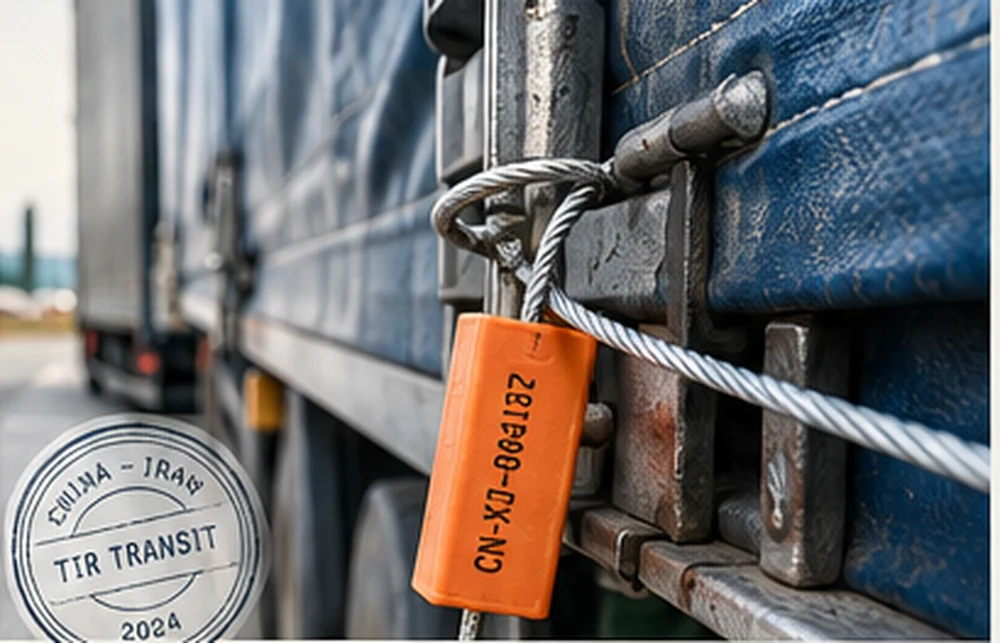

CARNET · SEAL · HANDOVER
China–Iran TIR road freight, with every handoff stated clearly
One TIR carnet. Customs-sealed transit. Handover at the agreed Iranian customs terminal.
The Wuqia direct configuration still includes one transload in Bukhara.

Seal status, along the route
- 01Wuqia / IrkeshtamCustoms sealed
- 02OshTransit under seal
- 03BukharaTransload ×1
- 04Sarakhs / LotfabadIran entry
- 05Tehran customsTerminal handover
An operating diagram, not live tracking. It does not imply that one physical seal number remains unchanged throughout. Tehran handover: Shahriyar / Aprin; Mashhad is also available by agreement.
Khorgos route
Khorgos → Kazakhstan → Uzbekistan → Turkmenistan → Iran
KHORGOS · ≈44.21°N / 80.40°ETransit time is quoted shipment by shipment. The current operating brief does not specify the number or location of transloads.
TIR, in three steps
- 01 / TIR
One carnet
The carnet accompanies the international customs transit process.
- 02 / TIR
Customs sealing
Cargo is sealed under customs control at the departure customs office.
- 03 / TIR
Transit control
Customs review the carnet and seal status. Inspection remains possible.
A defined process. A clear boundary.
| What TIR does | What it does not promise |
|---|---|
| Documents international customs transit | Faster transport or a lower freight rate |
| Provides customs-seal control | Inspection-free or zero-opening transport |
| Supports a defined transit process | DDP or door-to-door delivery |
| Records customs controls and resealing | A guaranteed arrival date |
Transit ranges
| Destination | Direct | Transload |
|---|---|---|
| Sarakhs / Lotfabad | 15–18 | 21–24 |
| Mashhad | 18–21 | 24–28 |
| Tehran | 21–23 | 26–30 |
Reference ranges supplied in the operating brief, not arrival commitments. Reconfirm at quotation. The domestic warehouse-to-Wuqia leg is separate, usually within 7 days, and is excluded above. Khorgos: case by case.
Handover at the customs terminal
CPT / DAP, with the named place and scope specified in each quotation. Destinations: Shahriyar (West Tehran Customs), Aprin Dry Port or Mashhad Customs. A Ghabz-e Anbar warehouse receipt is provided. The buyer or their agent handles Iran import clearance, import duties and taxes, and customs pickup.
CPT and DAP allocate delivery and risk differently; the agreed Incoterms® rule and named place govern. Arrival at a terminal alone does not define risk transfer.
What the quote covers
Included scope
Transport to the agreed customs terminal and warehouse-receipt handover, as itemised in the shipment quotation.
Separate charges
The supplied Wuqia operating brief lists a separate Kyrgyzstan charge of 0.4% of invoice value, outside freight. Confirm the legal classification, applicability and assessment basis for each shipment. Official guidance describes a customs operations fee; it does not establish a universal TIR transit tax. Khorgos bypasses Kyrgyzstan; other route charges may apply.
Official reference · KyrgyzstanThree details. One clear enquiry.
Origin warehouse
Yiwu / Shenzhen / Guangzhou / Shanghai
Destination customs
Shahriyar / Aprin / Mashhad
Cargo details
HS code + gross weight + volume
LCL minimum: 1 CBM or 100 kg.
+86 134 5470 1600
sales@tirtruckchinairan.com

Questions before departure
Is the cargo never opened?
No. Customs inspection remains possible. The Wuqia direct configuration includes one Bukhara transload; fewer does not mean zero.
Does TIR guarantee faster transport?
No. We do not use TIR to promise faster delivery. The published ranges are operational references, measured from Wuqia.
Does TIR guarantee a lower freight rate?
No. Freight is quoted for the route and cargo. TIR is not presented as a price guarantee.
Where is cargo handed over?
At the agreed Iranian customs terminal: Shahriyar, Aprin or Mashhad. The buyer or their agent clears and collects the goods.
What is the Kyrgyzstan 0.4% item?
It is a separate item in the supplied Wuqia operating brief. Its classification, applicability and calculation basis must be confirmed in the shipment quotation; it is not a universal TIR tax claim.
What is needed for a quote?
Origin warehouse, destination customs terminal, HS code, gross weight and volume. Send these through WhatsApp or email.